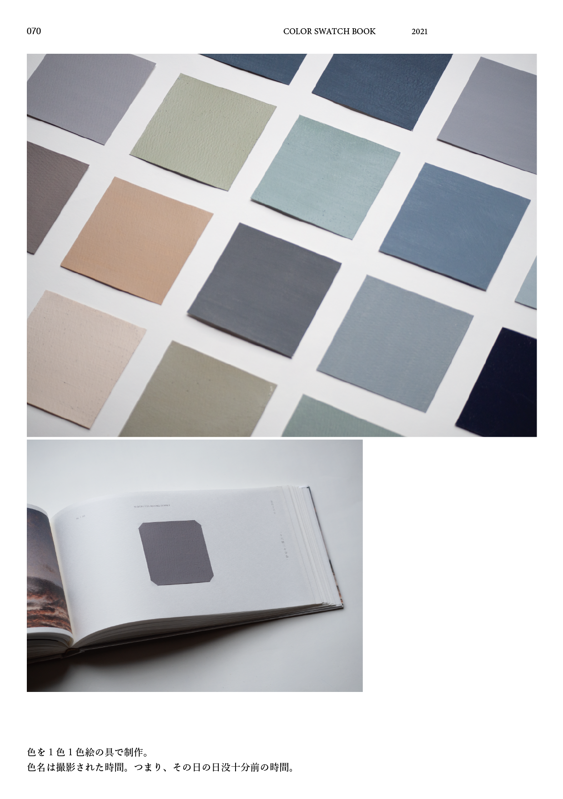

日没十分前
COLOR SWATCH BOOK

色見本帖の制作。
色見本帖を制作。
コロナ禍でなかなか外出できなかった2021年前半、家の中または家から見える景色から36色を抽出し、色見本帳を作るという課題。私はほぼ毎日、日没10分前空の色を抽出した。昼から夜に変わるその時間は人が一番落ち着く時間と言われている。そこから取り出す色はなんとも曖昧で色に名前がつけられない。そんな中、日に日に陽が延びることにより日没時間は毎日変わることに気づき、その時間を色名とした。
製本まで全て自分で行ったのだが、この作品を制作して、なんでも作ってみることによってデザインの幅が広がるを知った。全てのパーツを自分で製作することでそこまでデザインの目を生き通らせることができた。
